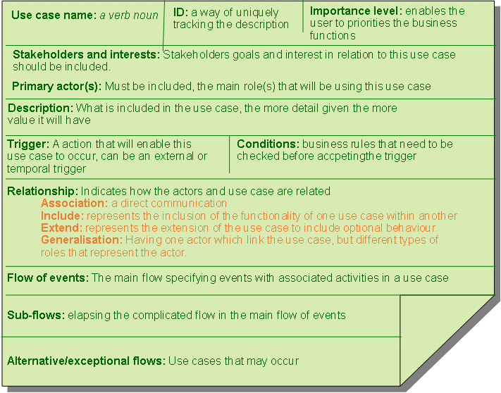
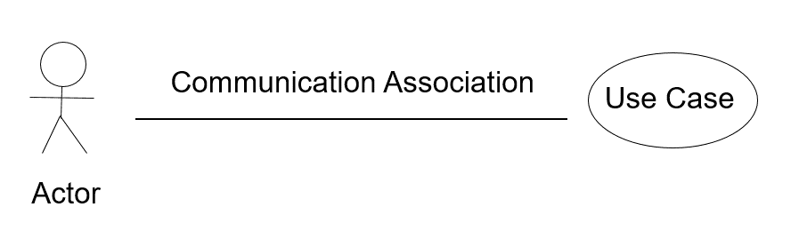
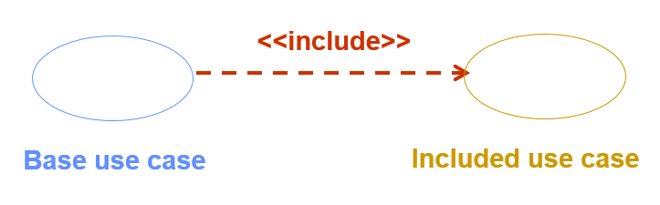
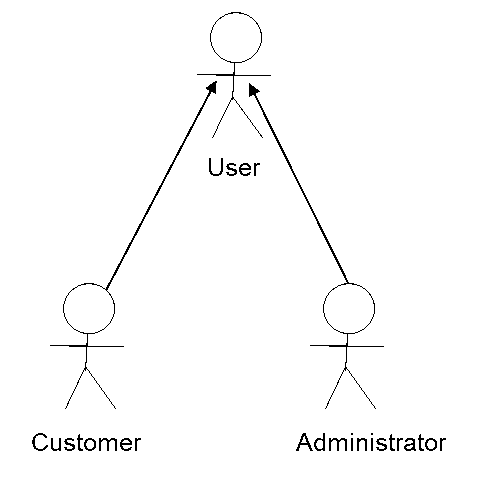
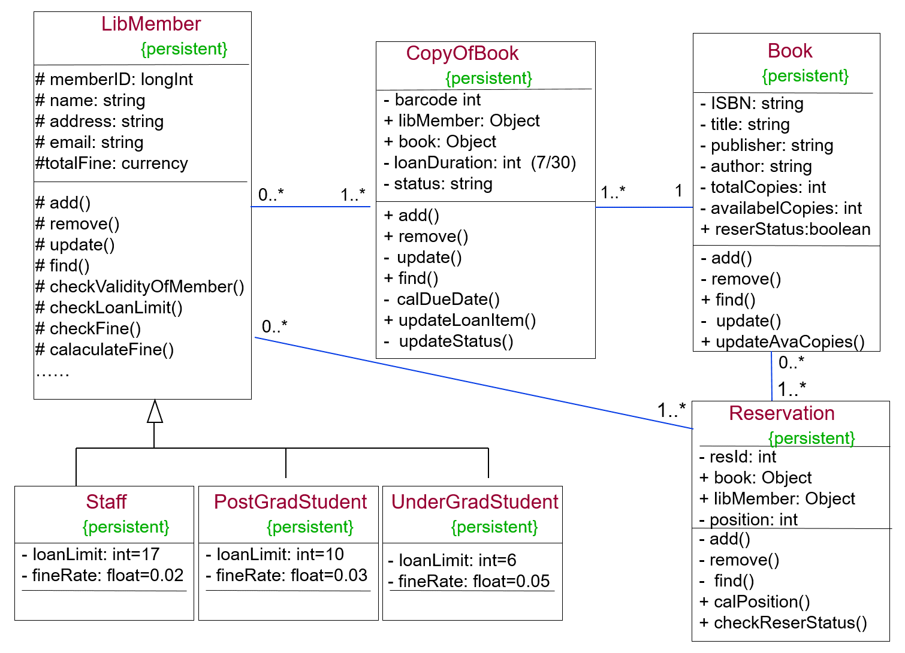
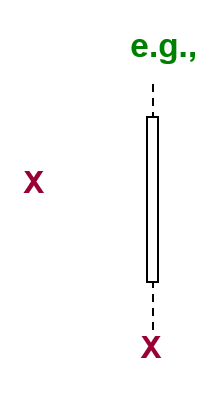
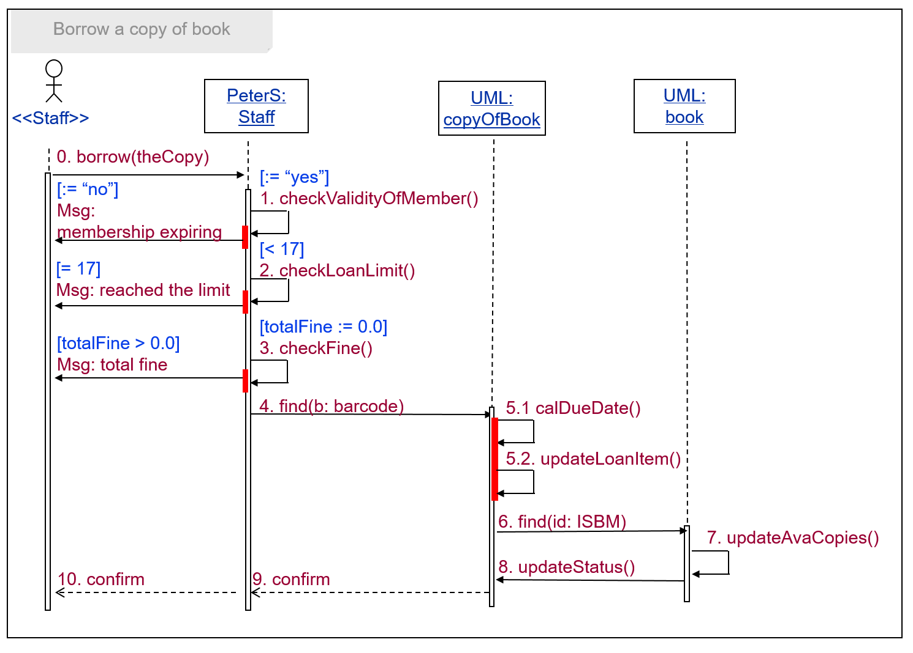
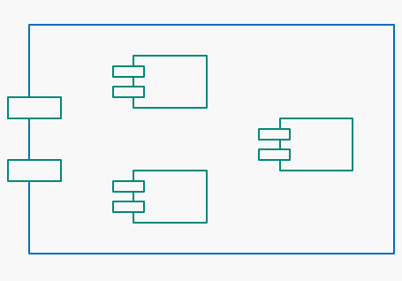

System Designs
Requirements Analysis and Systems Design
Requirements are the key of getting the end product right. There are some challenges when it comes to building the right systems, if the objectives are not clear; communications between the team has problem or resources are limited.
System thinking is the process of understanding how things influence one another within a whole domain context establishing a view of the system in a holistic manner and examining the linkages and interactions between the components which compose the entire system.
However, there are some issues with the System Thinking
- Holism: emergent properties are not possible to detect by analysis, but should be possible to be defined by a holistic approach
- Goal seeking: systemic interaction must result in a final state to achieve some goals.
- Inputs and Outputs: in a closed system inputs are determined once and constant but in an open system additional inputs are admitted from the environment.
- Transformation of inputs into outputs: this is the process through which the goals are achieved
- Regulations: A “feedback” mechanism is necessary for a system and allow the system’s functions to evolve driven by the requirements changes.
There are three mainstreams methodologies in realisation of Systems Thinking
- Structure methodology like Waterfall
- Rapid Application Development (RAD) methodology like Prototyping
- Agile methodology like Scrum
The Software System Development Process
- Requirement: what the customer would want
- Specification: what would be offered to build
- Design: How it would be built
- Implementation: a working system
- Deployment: putting it in place
- Maintenance and Evolution: helping to grow the system
System design is pervasive. The designing aspect happens throughout the development.
There are issues in Software Systems Design, below are some that have been identified:
- Decomposition and Modularisation: break a big system into smaller and self-evolving components
- Abstraction: not focusing on details to get the high-level structure right
- Encapsulation/information hiding: the ability to embed details
- Workflow and event handling: what the activities inside a workflow and how to handle events should be considered
- Concurrency: what the main concurrent activities are and how to manage their interaction should be considered
- Error handling and recovery: action when a physical component fails (e.g. the database server), and how to handle exceptional circumstances in the real world should be considered
- Persistence of data: what data should be stored in databases and files and how complex (e.g. syntactic, semantics, and pragmatics) they are should be considered
There are two types of designs within Software Systems Design
- High-level design (architectural design)
- Low-level design (physical design)
Design quality and evaluation should be considered.
- Design quality include features like performance, reliability, security, availability, modifiability, portability, reusability, testability, maintainability
- Evaluation can be achieved by measuring these features
Object-orientation is an approach to systems development
- A little module is known as object
- The basic features of Object-Oriented Approach are
- Encapsulation: bundle data and processing functions of the data together
- Information-hiding: a sturdy capsule is a black box – public interface and private representation
- Message: message = {name of an operation and any required arguments}
Analysis and Design Process
NEED A PIC HERE
Developing Use Case Diagrams
Use Case is a scenario (task) that conveys a software system interactions with the end user (actor) or another system by performing the functions (gaining input and output) for achieving the specific business goal in the domain context
There are 2 levels for the Use Cases:
- Business use cases (technology independent) which provides the information of
- what functions (services) are performed in a business domain context
- and how a business service being carried out is designed with Activity Diagrams
- System use cases (technology related) which provides the information of
- what functions (services) performed in a software system context
- and how the functional workflow being carried out in an application is designed with Sequence Diagrams
Software Systems Requirements are key and include:
- Functions requirements specifies the behaviour of a software system.
- Non-Functional aspects generally describe the non-functional requirements terms.
|
Use Case Diagrams
|

|
|---|
Below a Use Case Description is presented. There are explanations of what to include for each of the titles.
Below are the different types of relationship notation that can be used in a Use Case diagram
| 1. Association |
|---|
|  |
| 2. Include: can only occur between two use cases |
|  |
| 3. Extent: can only occur between two use cases |
 |
| 4. Generalisation |
|  |
Developing Activity Diagram
Activity in reality would be the business process that establishing the steps to creating the product.
Representation of a Process
Detailing activities in the Process

Activity Diagrams are designed so that the behavioural steps involved in a process that produce and consume artefact and information can be represented.
They are created for the views of ‘as-is’ and ‘to-be’ business processes
Notations of Activity Diagrams:
| An Activity node will contain a set of actions and be labelled by its name |
|---|
 |
| A control flow shows a sequence of execution |
| An initial-activity node will show the start of the set of activities |
 |
| A finish-activity node will stop the specific control flow |
 |
| Decision node will be used to ensure the activity flows through one path controlled by conditions |
 |
| A merge node will be used to bring back together different decision paths |
| A fork node will be used to split behaviour into a set of parallel or concurrent flows of activity |
 |
| A join node will be used to bring back together a set of parallel of concurrent flows of activities |
| A swimlane will be used to break up an activity diagram into rows and columns to assign the individual activity to the responsible role of a stakeholder who executes the activities. |
 |
Other Elements in the Activity Diagrams which have to considered
- Context which is the scope of the activities carried out
- Stakeholders are any users that are using the product, this can be human or non-human (other applications)
- Basic rules and constraints of the companies
Activity Diagrams are useful
- as they show how the use cases will achieve the goals
- shows who is responsible for which activity
- shows in great detail all the dependencies and alternatives for the activity
However, it does not reveal the messaging between the objects and the timings for each of the activities.
An Example of each type of Model, click on the image to enlarge it.
| Activity Diagram | Use Case Model | Process Model | Objects Mapping |
|---|---|---|---|

|
Designing Class Diagrams
The purpose of Class Diagram is to get a model with static view of the system.
The key feature of the Class Diagram:
- Class
- Name
- Attributes which describes the characteristics of the objects
- Operations which is used to manipulate attributes and to perform other actions
- Attributes
- Has a type which identifies the format of the attribute can take
- The attribute can be set to private, public or protected which controls the visibility within the classes
- Defaults can be set
- Operations
- Functions defined within a class that manipulate data of the objects of that class
The attributes have visibility setting which help to protect the attributes and operations
- Public (+) – the attributes would be seen in all associated class or package
- Protected (#) – the attributes would be seen in all associated subclasses
- Private (-) – the attributes would be seen in only that particular class
Relationship between the classes
- Association: there is a link between two objects; this would occur if one sends a message to another or if one’s attribute is being used by another
- Multiplicity: a range that indicates how many objects are linked (ranges are for example n…m, 0…1, 0…* etc)
- Generalisation: relationship between a general thing (superclass or parent) and a more specific kind of that thing (subclass of child)
An example of Class diagram for the Library System
To document the classes, attributes, operations and relationships Class-Responsibility-Collaborator (CRC) would be created. The CRCs are tailored for the different types.
CRC for Book Class

CRC for 'updateAvaCopies’ operation'

Mapping High-Level Behaviour of Objects onto Functional Workflow
Behavioural Modelling
- Functional workflow models
- describe the dynamic view of a software system
- there are two types: Sequence and Collaboration
- For the Functional workflow input from use case model, activity model and class model would be required
Concepts for Sequence Diagrams
| Name | Description | Icon |
|---|---|---|
| Actor | a person or system that derives benefits from and is external to the system. It invokes a sequence for sending and/or receiving messages |  |
| Object | participates sending and receiving messages |  |
| Lifeline | denotes the life of an object during a sequence of interactions |  |
| Execution Occurrence | denotes when an object is actively sending or receiving messages |  |
| Message | An operation in the class where an object belongs to or a function call |  |
| A self-delegated operation call |  |
|
| A return with value | ||
| Object destruction | “X” denotes a termination of the participation of message passing |  |
| Frame | “Scope” for sequencing the interactions and focuses on one use case |  |
An example of Sequence Diagram
Constructing Software Systems Architecture
Software Component (modular and cohesive) are executable units of code, designs, specification and tests. They can only be accessed through a published interface and be deployed in several nodes in the hardware architecture.
A software component architecture consists of components, ports and connections. Ports and connections form the interfaces between the components.
Basic Concept of Component Diagrams
| Name | Description | Icon |
|---|---|---|
| Component | A physical and replaceable building block of software systems |  |
| Interface | describes a group of operations used or created by components | |
| Provided interface | the component provides as a service to other components |  |
| Required interface | The component conforms to when requesting the services from other components |  |
| Port |
An explicit window into an encapsulated component
|
 |
| Part |
A unit of the implementation of the component
|
 |
| Connector | A communication relationship between different parts within the component | |
| Delegation connector |
|
 |
| Direct connector | The connection is tightly coupled |  |
| Connector by interface | both ports have compatible interface | |
An example of Compiler components can be seen below

Another example, where it shows the 'OrderFulfillment' components. Here you can see the use of the different types of connectors